www.jabseventos.com.br
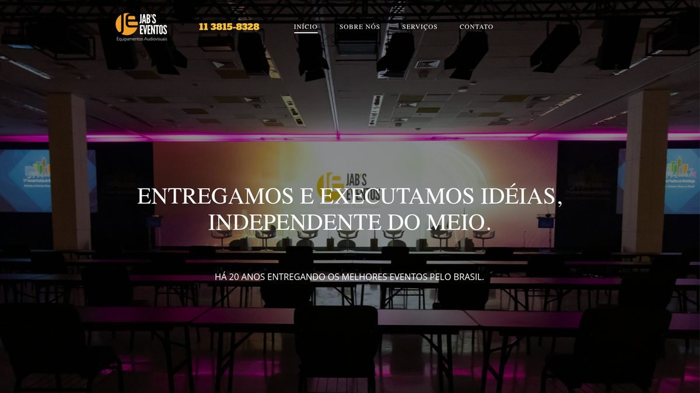
Daniel Soberanis · Webdesigner e presença digital
Sites que posicionam marcas, despertam interesse e conduzem pessoas até a decisão.
Explorar projetosProjetos desenvolvidos
Uma seleção de experiências digitais criadas para negócios, serviços e plataformas com objetivos distintos.

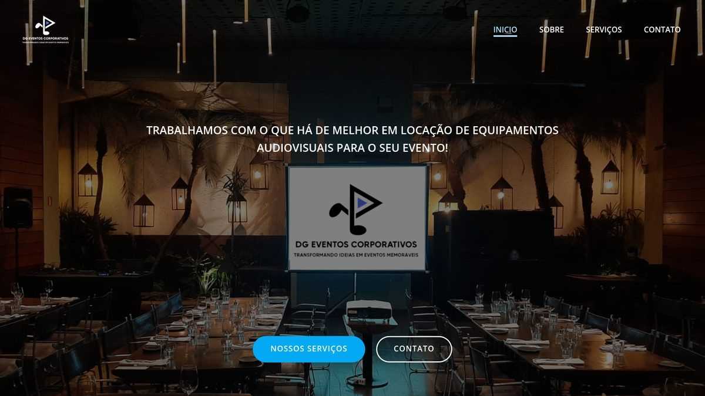
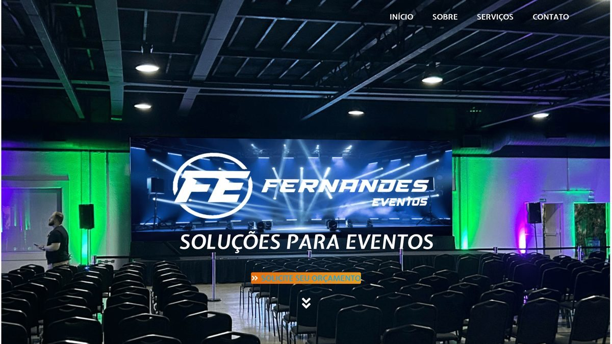
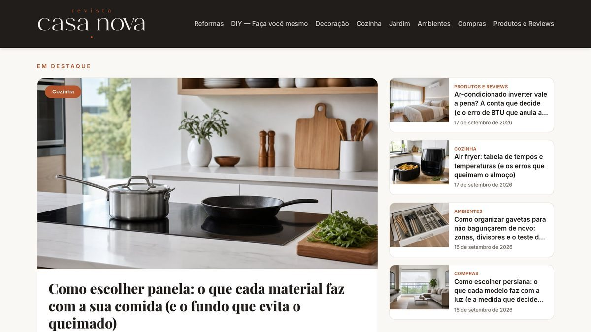
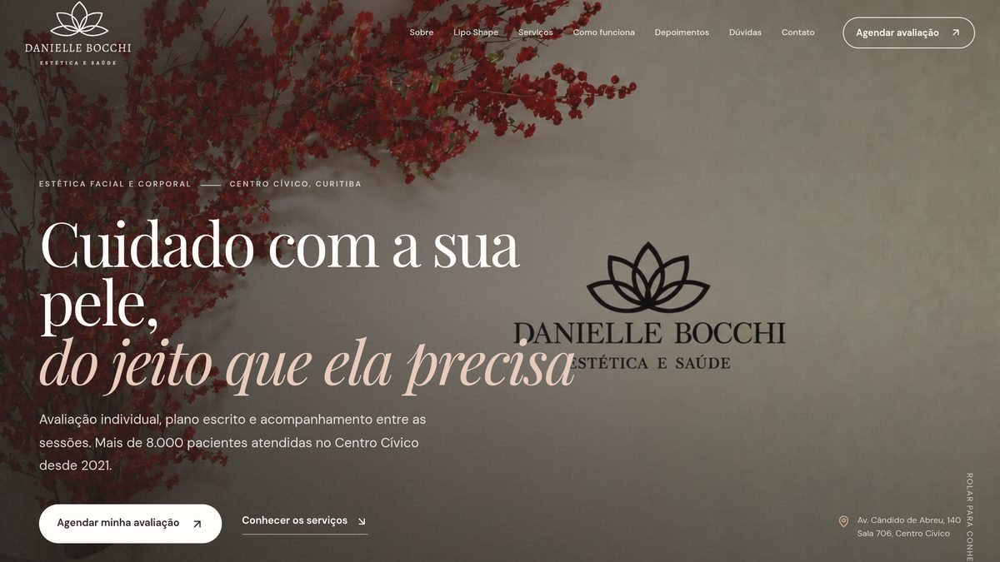
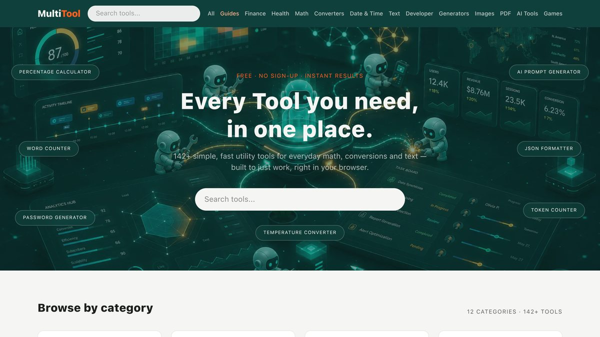
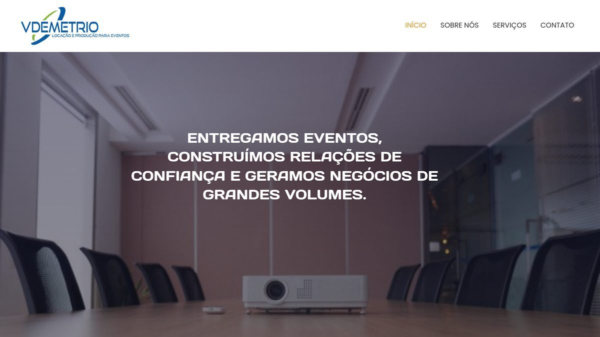
Um retrato do cliente que chega até mim: negócio bom, trabalho bem feito, e mesmo assim invisível para quem não o conhece. É o relato dele, do jeito que ele contaria.
“Eu postava todo dia, respondia todo mundo e cuidava do visual do perfil como se fosse a minha vitrine. E mesmo assim eu vivia explicando o que eu fazia — sempre para quem já me seguia. Quem não me seguia, não me achava.”
“Demorei para entender que eu não estava sem cliente. Eu estava sem ser encontrado.”
“O Daniel não chegou me vendendo um site bonito. Ele me fez três perguntas sobre o meu negócio e devolveu uma página em que o cliente entende o que eu faço em dez segundos, vê o trabalho e já me chama sabendo o que quer.”
“Hoje a conversa é outra. Quem me procura já me viu no Google, já olhou o site e chega decidido. Eu troquei a correria de explicar pela tranquilidade de atender.”
Dependia do algoritmo para ser visto, só alcançava quem já seguia, e cada indicação começava do zero — com uma explicação longa e um portfólio espalhado em prints.
Uma página só, com a mensagem na ordem certa: o que é, para quem é, prova do trabalho e contato em um toque. Ficha do Google Meu Negócio criada e tudo preparado para aparecer na busca local.
O cliente passa a chegar informado. Menos tempo explicando, mais tempo fechando — e uma presença que não desaparece na próxima vez que o algoritmo mudar de ideia.
O custo de não ter um site
Você posta, cuida do visual e responde todo mundo — e ainda assim depende de um algoritmo que muda a regra sem avisar. Enquanto isso, tem gente no Google agora mesmo digitando exatamente o serviço que você entrega. O site é onde essa pessoa te encontra, te avalia e decide te chamar. Sem ele, ela liga para o concorrente que apareceu no seu lugar.
O feed conversa com quem já conhece a sua marca. O site conversa com quem ainda não sabe que você existe — e é justamente aí que mora o cliente novo.
Hoje ninguém liga para pedir informação básica: a pessoa pesquisa, compara e forma opinião sozinha. Se nessa hora o seu negócio não tem onde ser avaliado, ele sai da lista sem você saber.
Uma semana o post alcança, na outra o alcance cai e o movimento cai junto. O site é o único ponto de presença que é seu por inteiro: ninguém limita quem te vê, e nada desaparece quando a plataforma muda de ideia.
Um site apresenta, tira dúvidas, mostra portfólio e traz contato de madrugada, no domingo, no feriado. Você investe uma vez e ele continua vendendo todos os dias. Anúncio não é investimento: para de funcionar no dia em que você para de pagar.
Cada mês sem site é um mês de clientes que escolheram outra pessoa — não porque ela faz melhor, mas porque foi encontrada primeiro.
Como posso ajudar
Projetos completos para apresentar sua empresa com clareza, personalidade e credibilidade.
Experiências digitais organizadas para facilitar a navegação, a descoberta e a conversão.
Estrutura preparada para buscadores, carregamento rápido e boa experiência em qualquer tela.
Acompanhamento para manter conteúdo, tecnologia e presença digital sempre atualizados.
Presença local
Criação, gerenciamento e atualização de perfis para sua empresa aparecer com informações corretas nas buscas e no Google Maps.
O Google Meu Negócio é a ficha gratuita da sua empresa dentro do Google. É ela que aparece com endereço, telefone, horário, fotos e avaliações quando alguém procura pelo seu serviço — e é ela que coloca o seu negócio no Google Maps.
Na prática, é a sua vitrine na hora da decisão: funciona para quem tem loja, escritório ou atende na rua. Sem ficha, ou com a ficha desatualizada, o seu negócio até existe — mas não é encontrado, não é comparado e não é escolhido.
A pessoa digita o serviço e a cidade, olha os primeiros resultados e liga. Na pressa de quem precisa resolver um problema hoje, não existe prêmio para o segundo colocado.
Fotos, horário, telefone e avaliações dizem em cinco segundos se você transmite confiança. Ficha desatualizada manda a pior mensagem possível: a de que o negócio pode ter fechado.
Cada comentário é uma indicação que continua exposta para todo mundo que pesquisar amanhã. Responder bem a uma crítica vale mais do que qualquer postagem.
A busca local tem intenção: quem procura no celular costuma ligar ou visitar no mesmo dia. É a única frente que alcança a pessoa no segundo exato em que ela precisa de você.
Presença online não é vaidade: é estar disponível na hora em que o cliente decide. Quem não está lá, entrega essa decisão de bandeja para o concorrente.
Sobre mim
São mais de vinte anos trabalhando com comunicação visual, tecnologia e internet. Tempo suficiente para ver moda passar, ferramenta morrer e promessa de resultado fácil não se sustentar.
Comecei no design gráfico, quando a entrega ainda era impressa. Depois vieram os sites, as redes sociais, a busca local, o Google Meu Negócio. Eu acompanhei cada uma dessas mudanças de perto — não por curiosidade, mas porque quem trabalha com presença digital não pode chegar atrasado.
Hoje uso inteligência artificial no meu processo, e não para substituir o trabalho: uso para acelerar o que é repetitivo e sobrar tempo para o que realmente decide um projeto — entender o seu negócio, escolher a mensagem e construir algo que você reconheça como seu.
Não trabalho com fórmula pronta nem com site de modelo. Todo projeto começa pela mesma pergunta: o que o seu cliente precisa ver para confiar em você? O resto — layout, texto, estrutura, busca local — é consequência dessa resposta.
E tem uma coisa prática: você fala direto com quem executa. Sem briefing passando por três mãos, sem sumiço no meio do caminho. Se você chegou até aqui, provavelmente já sabe que precisa de um site — o que talvez ainda não saiba é que dá para resolver isso de forma simples, sem mistério e sem precisar de orçamento de agência.
Seu próximo projeto
Social media
Conteúdo que mantém marcas em movimento.
Gestão criativa de perfis no Instagram: desenvolvimento de artes e criativos exclusivos, planejamento de conteúdo e publicações conduzidas de acordo com o calendário editorial de cada cliente.
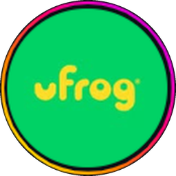
UFrog Brasil
@ufrogbrasil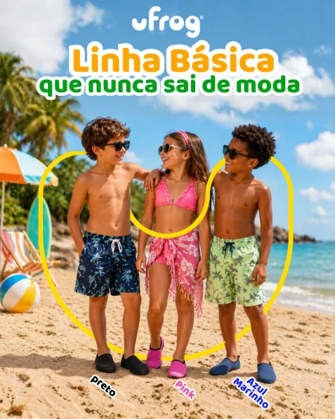
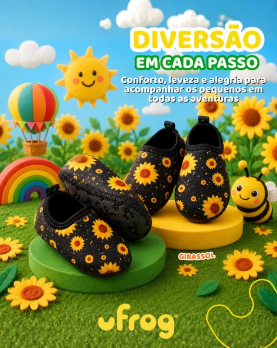
Moda e lifestyle infantil
Ver perfilWiggy
@wiggyoficial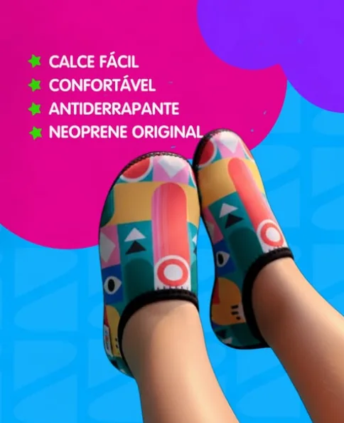
Moda e lifestyle
Ver perfilJab’s Eventos
@jabseventosAudiovisual para eventos
Ver perfilPasseio de Lancha no Guarujá
@passeiodelanchanoguarujaTurismo e experiências
Ver perfilQRV Rastreamento
@qrvrastreamento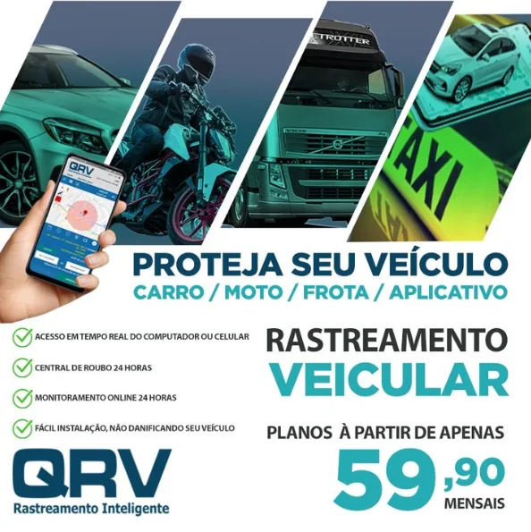
Segurança veicular
Ver perfilLia Seguros
@lia.seg.brSeguros e consultoria
Ver perfil